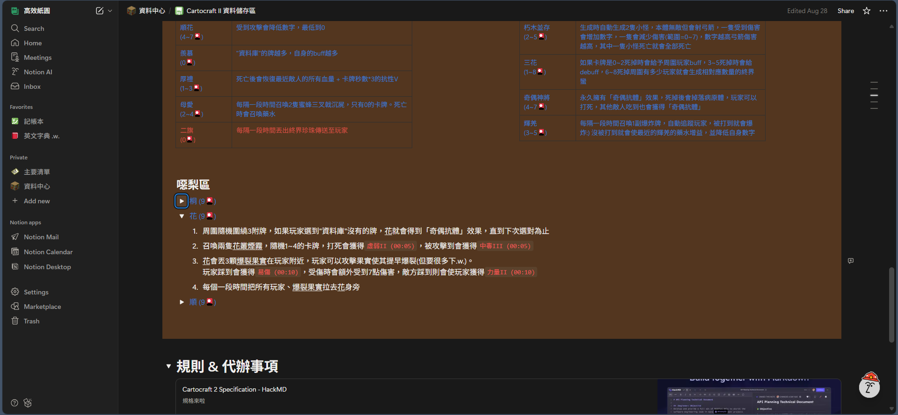

Cartocraft II
— — 限時三個月的大型合作企劃 — —
專案說明
Cartocraft 是來自 Caroland 社群舉辦的一個製圖活動，這裡集結了各種大佬們的技術、奇怪想法、努力、付出、反社會人格的遊戲設計，也能在製作過程中有學會與他人磨合、互相切磋、交朋友的機會，是個對我來說非常重要的活動，總的來說是個沒這麼認真的Game Jam？並且在最後把所有人做的區域組合起來，成為一個前後貫通的大型冒險地圖。
看名字你也可以發現，這個活動在 2024 年 10 月開始舉辦第二次，上了大學的我也非常開心的選擇了單人參加(一人包辦美術、建築、程序編寫etc.)，實作了自己想像中最獨特的主題「花牌」。在我的區域中，收集所有花牌來解鎖＂目標物＂成了主要最主要的通關方式，而並非傳統的尋找＂目標物＂，此外我也努力想了很多跟花牌有關的機制(牌的數字到幾會無敵、會造成多少傷害etc.)，成果我非常滿意，內容十分獨特卻又不失遊戲體驗。
可惜目前寫稿時 Cartocraft II 還在合併的困難當中，主辦方也因為現實生活的繁忙而進度緩慢，所以不能展示別人的遊玩體驗 :(
實作佐證
製作時的測試紀錄

當初擬草稿的筆記